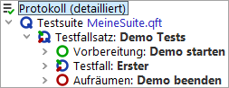

| Version 6.0.3 |
Als Abschluss wollen wir unsere neue Suite ausführen:
Das SUT sollte erscheinen, der Testfall aufgeführt und das SUT wieder beendet werden.
Wie wir wissen, wird das Ergebnis des Testlaufs im Protokoll festgehalten:
|
|  | ||
|
| Abbildung 20.14: Der Protokollbaum der eigenen Testsuite | ||
Wir hatten bereits im ersten Kapitel gesehen, wie das Protokoll für die Fehleranalyse genutzt werden kann.
Wir möchten damit dieses Kapitel beenden und einen Schritt weiter in Richtung Fehlerdiagnose gehen. Hierbei stellt der Debugger ein wichtiges Werkzeug innerhalb QF-Test dar. Seine Handhabung und Möglichkeiten werden im nächsten Kapitel beschrieben.
| Letzte Änderung: 6.9.2022 Copyright © 2002-2022 Quality First Software GmbH |